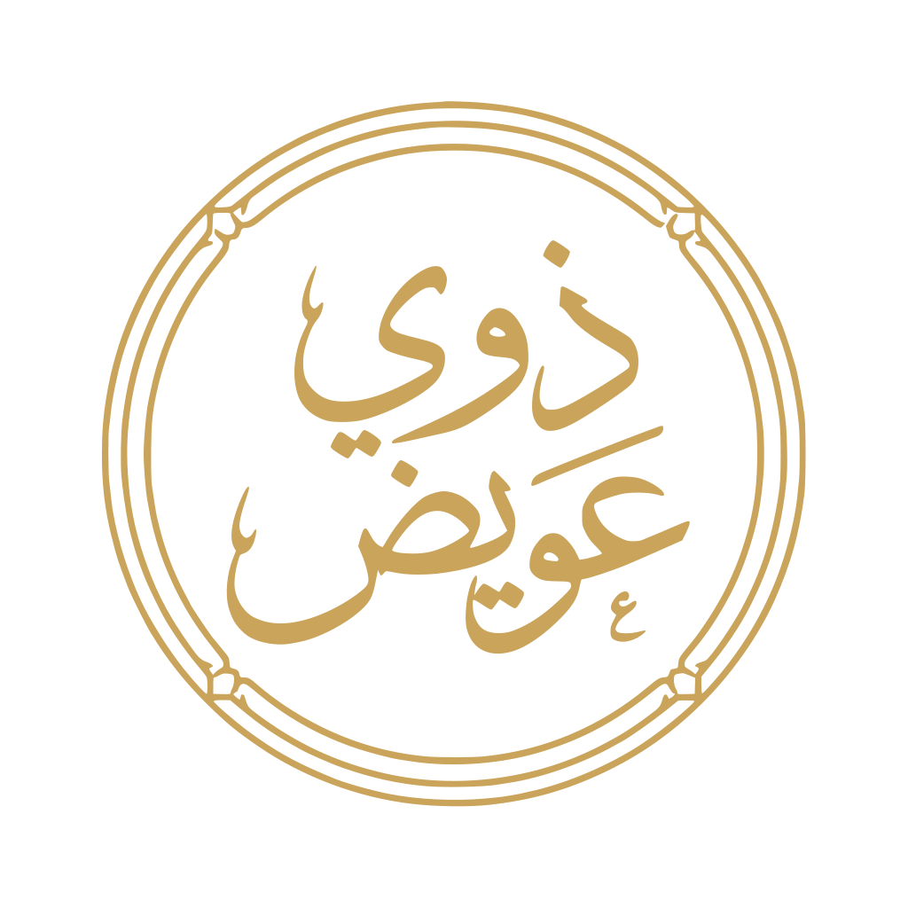
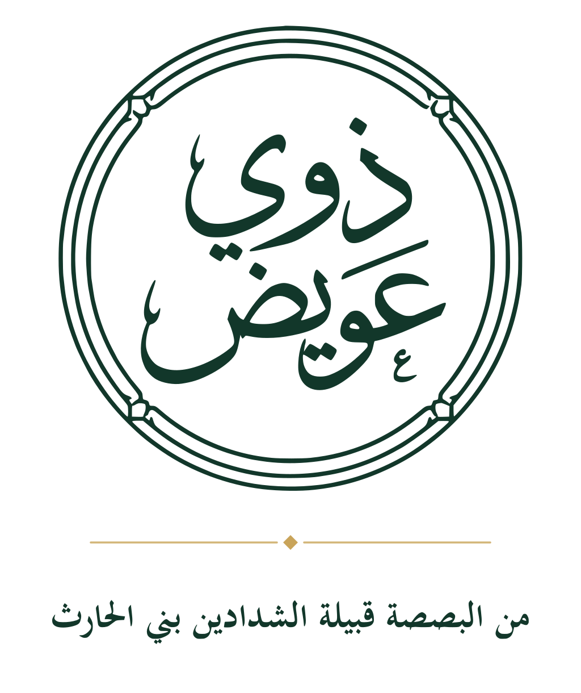
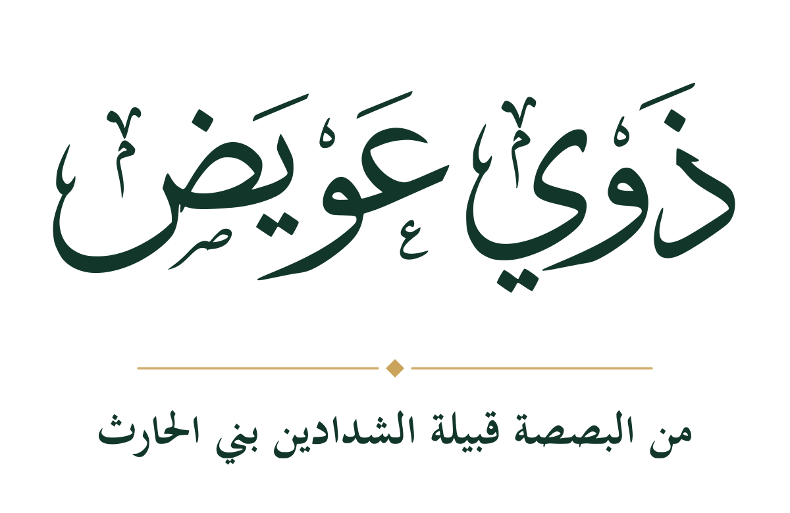

الشعار ١ — صافيبدون نص إضافي
الختم الملكي الدائري (النسخة الصافية)
معتمد لأيقونة تطبيق الآيفون والجوال، البروش المعدني، الميداليات، ختم القماش الجلدي الصغير، والعلامة المائية داخل الأوراق الرسمية.
الهوية البصرية المعتمدة — من البصصة قبيلة الشدادين بني الحارث
يجمع نظام الهوية المعتمد بين الختم الملكي الدائري بالثلث الجلي والمخطوطة الديوانية الحرة دون خلطهما داخل شكل واحد مزدحم. ويتوفّر كل شعار في نسختين: نسخة رسمية كاملة تحمل أسفلها عبارة «من البصصة قبيلة الشدادين بني الحارث» للمطبوعات والأوراق، ونسخة صافية للأيقونات والبروشات والميداليات والمقاسات الصغيرة.

معتمد لأيقونة تطبيق الآيفون والجوال، البروش المعدني، الميداليات، ختم القماش الجلدي الصغير، والعلامة المائية داخل الأوراق الرسمية.

معتمد لأغلفة الكتب الرسمية، الدروع التذكارية، الشهادات، والطباعات التي تتسع لعرض النص التعريفي أسفل الختم بوضوح تام.
معتمدة لشريط الموقع العلوي، الأكواب المطبوعة بأسلوب بسيط، توقيعات البطاقات الرقمية، والواجهات الضيقة التي يكتب فيها السطر التعريفي مستقلاً.

معتمدة لترويسة ورق المراسلات الرسمي، اللوحة الجدارية الكاملة للشجرة، الأكواب الفاخرة، لافتات القاعات، ومطبوعات الاحتفالات الكبرى.
| التطبيق | الشعار الأنسب | النسخة (كاملة أم صافية؟) |
|---|---|---|
| أيقونة التطبيق على الآيفون والويب | الشعار ١ (الختم الدائري) | صافية بدون نص إضافي لضمان الوضوح في المقاس الصغير |
| البروش المعدني والميدالية التذكارية | الشعار ١ (الختم الدائري) | صافية (النقش تحت ٢.٥ سم يطمس النص الصغير أثناء الصب) |
| غلاف الكتاب التذكاري والدروع | الشعار ١ (الختم الدائري) | كاملة بالذهب الحراري مع سطر «من البصصة قبيلة الشدادين بني الحارث» |
| الورق الرسمي واللوحة الجدارية ولافتات الحفل | الشعار ٢ (المخطوطة الحرة) + الختم كعلامة مائية | كاملة بالخط التراثي الكامل والمحاذاة الرسمية |
| الأكواب الخزفية والهدايا الرسمية | الشعار ١ أو الشعار ٢ | صافية على الكوب الداكن، أو كاملة على الوجه الواسع للكوب |
#12372A#C9A45A#F6F1E6#1A1A1A